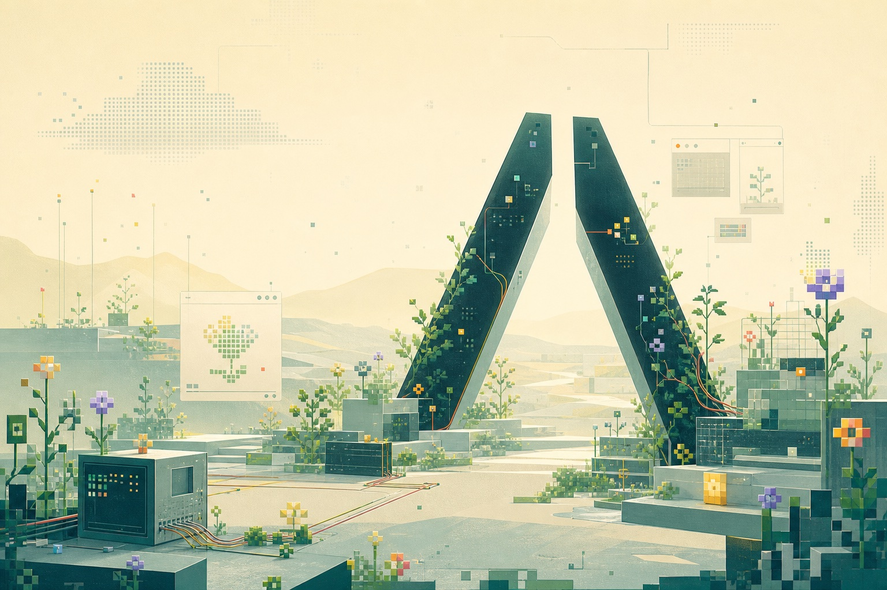

01 / Developer tooling
Pi Desktop
A desktop workspace for coding agents. The project explores how parallel software work, agent state, and human intervention can become legible without collapsing into terminal output.
- Purpose
- See and direct parallel agent work
- Shape
- Desktop software and interaction system
- Status
- Public open-source project